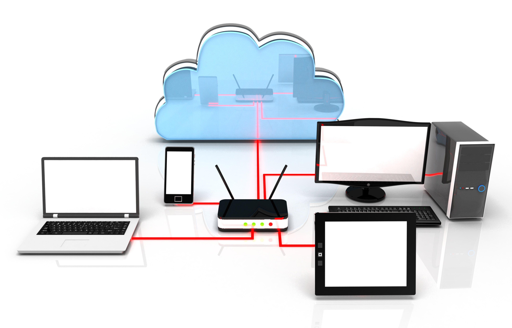

O que são redes de computadores?
Redes de computadores referem-se a dispositivos de computação interconectados que podem trocar dados e compartilhar recursos entre si. Esses dispositivos em rede usam um sistema de regras, chamados de protocolos de comunicação, para transmitir informações por meio de tecnologias físicas ou sem fio.
Vamos responder a algumas perguntas frequentes sobre redes de computadores:
Como uma rede de computadores funciona?
Nós e links são os blocos de construção básicos em redes de computadores.
- Nó de Rede: pode ser um equipamento de comunicação de dados(DCE), como um modem, hub ou switch, ou um equipamento terminal de dados (DTE), como dois ou mais computadores e impressoras.
- Um nó de rede: Um link refere-se ao meio de transmissão que conecta dois nós. Os links podem ser físicos, como fios de cabos ou fibras ópticas, ou espaço livre usado por redes sem fio.
Em uma rede de computadores em funcionamento, os nós seguem um conjunto de regras ou protocolos que definem como enviar e receber dados eletrônicos por meio dos links. A arquitetura de rede de computadores define o design desses componentes físicos e lógicos. Ela fornece as especificações para os componentes físicos da rede, organização funcional, protocolos e procedimentos.

O que as redes de computadores fazem?
As redes de computadores foram criadas no final da década de 1950 para uso militar e de defesa. Elas foram inicialmente usadas para transmitir dados por linhas telefônicas e tinham aplicações comerciais e científicas limitadas. Com o advento das tecnologias da Internet, uma rede de computadores tornou-se indispensável para as empresas.
As soluções de rede modernas oferecem mais do que conectividade. Elas são essenciais para a transformação digital e o sucesso das empresas hoje. Os recursos de rede subjacentes tornaram-se mais programáveis, automatizados e seguros.
As redes de computadores modernas podem:
Operar virtualmente
A infraestrutura de rede física subjacente pode ser particionada de forma lógica para criar várias redes de "sobreposição". Em uma rede de computadores de sobreposição, os nós estão virtualmente vinculados e os dados podem ser transmitidos entre eles por meio de vários caminhos físicos. Por exemplo, muitas redes empresariais são sobrepostas na Internet.
Integrar em grande escala
Os serviços de redes modernos conectam redes de computadores distribuídas fisicamente. Esses serviços podem otimizar as funções de rede por meio de automação e monitoramento para criar uma rede de grande escala e alta performance. Os serviços de rede podem ter a escala aumentada ou reduzida na vertical com base na demanda.
Responder rapidamente às mudanças nas condições
Muitas redes de computadores são definidas por software. O tráfego pode ser roteado e controlado de forma centralizada usando uma interface digital. Essas redes de computadores oferecem suporte ao gerenciamento de tráfego virtual.
Fornecer segurança de dados
Todas as soluções de redes vêm com recursos de segurança integrados, como criptografia e controle de acesso. Soluções de terceiros, como software antivírus, firewalls e antimalware, podem ser integradas para tornar a rede mais segura.
Quais são os tipos de arquitetura de rede de computadores?
O design da rede de computadores se enquadra em duas grandes categorias:
1. Arquitetura cliente-servidor
Nesse tipo de rede de computadores, os nós podem ser servidores ou clientes. Os nós do servidor fornecem recursos como memória, capacidade de processamento ou dados aos nós clientes. Os nós do servidor também podem gerenciar o comportamento do nó cliente. Os clientes podem se comunicar uns com os outros, mas não compartilham recursos. Por exemplo, alguns dispositivos de computador em redes empresariais armazenam dados e definições de configuração. Esses dispositivos são os servidores na rede. Os clientes podem acessar esses dados fazendo uma solicitação à máquina do servidor.
2. Arquitetura ponto a ponto
Na arquitetura ponto a ponto (P2P), os computadores conectados têm capacidades e privilégios iguais. Não existe um servidor central para coordenação. Cada dispositivo na rede de computadores pode atuar como cliente ou servidor. Cada ponto pode compartilhar alguns de seus recursos, como memória e capacidade de processamento, com toda a rede de computadores. Por exemplo, algumas empresas usam a arquitetura P2P para hospedar aplicações que consomem memória, como renderização gráfica 3D, em vários dispositivos digitais.